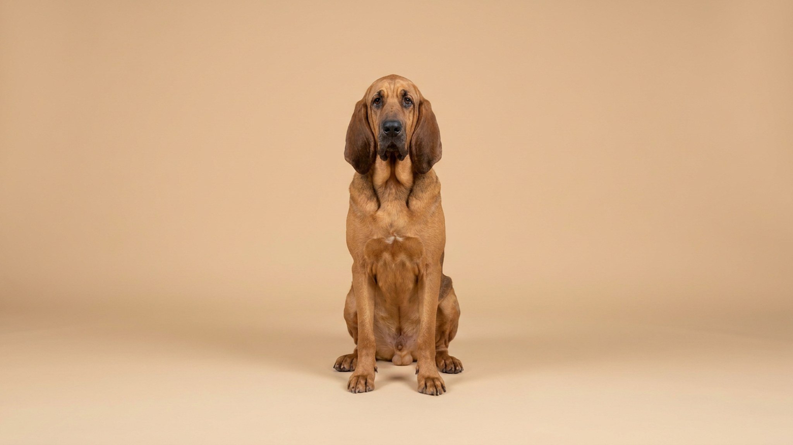

Бладхаунд способен взять след, которому больше суток, и идти по нему километрами — полностью игнорируя хозяина. Не потому что непослушный: нос буквально отключает остальные чувства. За этим легендарным нюхом скрывается собака с характером: добродушная, но упрямая, требовательная к нагрузке и дающая слюни вёдрами. Здесь — что нужно знать до того, как взять щенка.
🐾 У вас бладхаунд?
AnimaLife соберёт уход под породу: к каким болезням есть склонность, что проверять по возрасту, чем кормить и когда пора к врачу. Бесплатно, прямо в мессенджере.
Собрать план ухода → Собрать в MAX →
У вас iPhone? AnimaLife есть в App Store
У бладхаунда около 300 миллионов обонятельных рецепторов — в 40 раз больше, чем у человека. Когда собака берёт след, нос буквально управляет ею: команды «ко мне», «рядом», «стоять» перестают существовать. Это не дрессировочный провал — это физиология.
Практические выводы для хозяина:
Бладхаунд не агрессивен от природы. С людьми — мягкий, с детьми — терпеливый, с другими собаками — спокойный. Но послушание в классическом смысле — не его стихия. Порода тысячелетиями работала самостоятельно, принимая решения без команды человека. Это закрепилось в характере.
Чего ждать в дрессировке:
Внешность бладхаунда не требует груминга в салоне, но ежедневного внимания хватает.
Бладхаунд — рабочая гончая, и он это помнит. Минимум — два часа активной прогулки в день. Без достаточной нагрузки начнутся разрушительные привычки: вой, жевание мебели, побеги.
Порода подойдёт, если вы: живёте за городом или близко к лесу, готовы к долгим прогулкам каждый день, хотите заниматься трекингом или поисковой работой, терпеливы и спокойны в дрессировке.
Порода категорически не подойдёт, если вы: ждёте послушания с первого занятия, живёте в маленькой квартире без возможности долгих выходов, не готовы к слюням и специфическому уходу за ушами и складками, хотите собаку для отпугивания — бладхаунд слишком дружелюбен для этой роли.
Материал носит информационный характер и не заменяет очную консультацию ветеринара.
🐾 Ваш питомец — бладхаунд?
Заведите профиль в AnimaLife: приложение запомнит породу, возраст и вес и будет подсказывать по уходу именно для неё. Вопросы AI-ветеринару — круглосуточно и бесплатно.
Завести профиль → Завести в MAX →
У вас iPhone? AnimaLife есть в App Store
🐾 Понравился разбор?
Подпишитесь на канал — каждый день разбираем по одному тревожному симптому у кошек и собак: что в пределах нормы, а когда пора к врачу. Подпишитесь, чтобы не пропустить разбор, который может спасти здоровье вашего питомца.